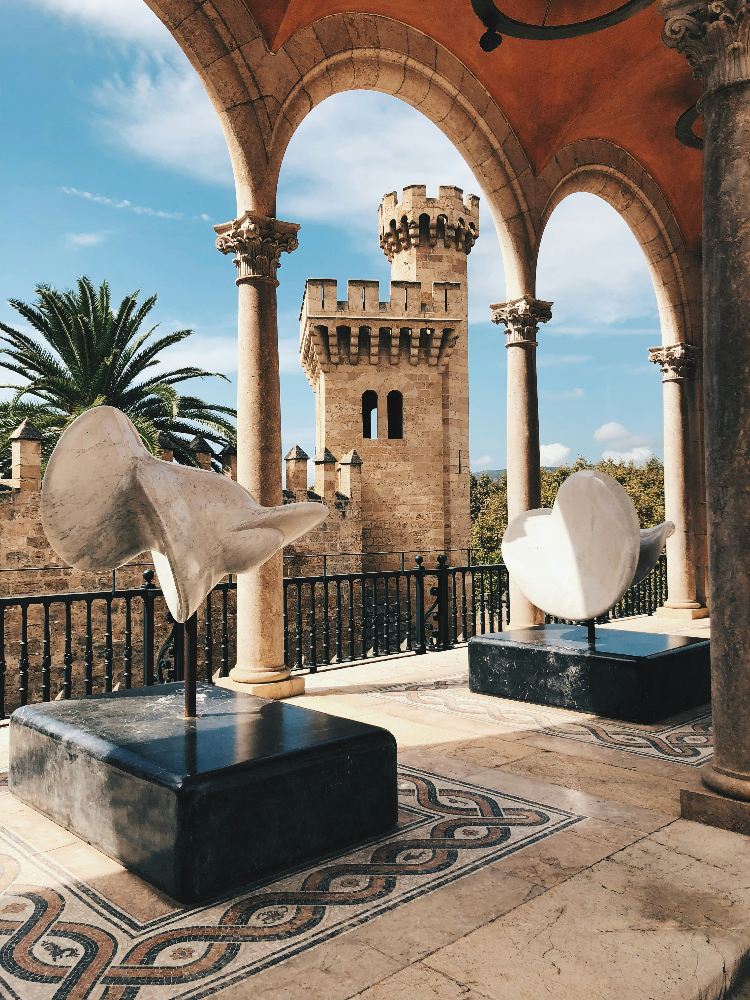

Enjoy the Local Atmosphere!
There is plenty to do on the island within the local communities of Taniti island. Many of these activities are located in Merriton Landing, which is a rapidly developing area on the north side of Yellow Leaf Bay.
Explore Taniti's Culture
Most tourists spend most of their time in Taniti City, which boasts native architecture.
Visiting the local history museum and art galleries are also great ways to experience the tanitian culture.

"Sculptures displayed in an art galary."[1]
Family Friendly Entertainment
Have fun playing at an arcade, seeing a movie, or go bowling.
Additionally, a nine-hole golf course will be operational by next year!

"Arcade"[2]
Night Life
Spice up the night by visiting any of the several pubs, including a microbrewery, or dancing at the new dance club!

"A bartender pours a draft"[3]